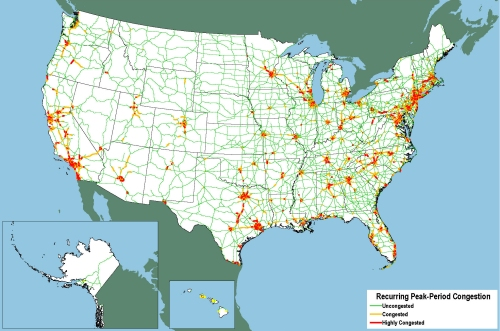

Truck Freight
Trucking is the most ubiquitous form of freight transportation in the United States. According to the most recent figures (2007) released by the Bureau of Transportation Statistics, trucks accounted for 70 percent of tonnage hauled and 40 percent of ton-miles of domestically-transported freight. While trucks can make deliveries almost anywhere, a substantial percentage of total truck trips are concentrated on specific corridors. In some cases, truck corridors have been officially designated by governmental entities. In other cases, truck corridors earn their de facto status due to the volume of trucks on the roadway. Truck corridors can stretch over multiple states or constitute short ‘last-mile’ connections between ports and distribution centers. In almost all circumstances, heavy duty trucks must share space with passenger vehicles; a fact that makes trucks an easy target for criticism and an occasional scapegoat for congestion and pollution problems, even when these problems have broader causes.
Constraints and Bottlenecks
Truck corridors around the United States face a number of potential constraints and bottlenecks. In order to better envision the bottlenecks that face truck traffic, the Federal Highway Administration (FHWA) sponsored an assessment of truck bottlenecks that included the constraint typology summarized in Table 1 below.
Table 1. Truck Bottleneck Typology.
Constraint Type |
Roadway Type |
Freight Route Type |
Lane-Drop |
Freeway |
Intercity Truck Corridor |
Interchange |
Arterial |
Urban Truck Corridor |
Intersection/Signal |
Collectors/Local Roads |
Intermodal Connector |
Roadway Geometry |
Truck Access Route |
|
Rail Grade Crossing |
||
Regulatory Barrier |
Source: http://www.fhwa.dot.gov/policy/otps/bottlenecks/chap3.htm
Of the categories listed in Table 1, most are inherent to the design of the roadway and become constraining as volume increases. The addition of new regulatory barriers is one area in which newly-enacted restrictions can limit the capacity of preexisting corridors. Types of regulatory barriers that can affect the viability of trucking corridors include, for example, restrictions on hazardous material movements through urban areas or over critical infrastructure, such as bridges and tunnels.
Trends in business logistics demand higher levels of service from freight carriers, as there has been a substitution of more frequent shipments for inventory, with carriers acting as rolling warehouses.[1] The role of speed and reliability of transportation as key components in manufacturing and retail supply chains places intense demands on the nation’s transportation infrastructure. The freight transportation system has been characterized as a network of conduits and pipes that is only as efficient as its “weakest link.” For example, in addition to being the top U.S. foreign trade gateways, Los Angeles and Long Beach also had the greatest amount of traffic delay per traveler. The worst highway bottleneck in the country is the I-710/I-105 interchange in Los Angeles. I-710 is the major connector to the Port of Long Beach. Another critical and highly congested connector is near the Port of New York and New Jersey around the George Washington Bridge. This is an extremely complex area, with multiple highways merging just prior to the Bridge and having a major bottleneck on the eastern end. Overall, Los Angeles has five of the top truck bottlenecks, Atlanta has four, and Chicago has three.[2] Figure 1 shows peak period congestion on high-volume portions of the national highway system.
Figure 1. Peak-Period Congestion on High-Volume Truck Portions of the National Highway System: 2007
Source: http://ops.fhwa.dot.gov/freight/freight_analysis/nat_freight_stats/nhsconghvtrk2007.htm
Hazardous Materials
The decision of how to restrict hazardous materials (hazmat) movement is complex. Transportation advocates have argued that the first priority should be to establish greater consistency across states. Because of delays in Congressional action on hazmat routing procedures, [3], some states are leading in harmonizing regulations. To this end, seven states have formed the Alliance for Uniform Hazmat Transportation Procedures. The proposed transportation reauthorization that was not acted on by the 111th congress included draft language to harmonize hazmat routing procedures. The Federal Motor Carrier Safety Administration has recently stepped in to overrule some state-imposed hazmat routing provisions on pre-emption grounds, including a 2009 case in which the city of Boston had placed a daytime ban on the movement of trucks carrying hazmat through the downtown.[4] However, the city has been granted a temporary extension of the ban.
Anti-Idling and Hours of Service Restrictions
Emissions restrictions tied to air quality are another regulatory area that may, in the long run, make the trucking industry more sustainable but, in the shorter term, have caused some restrictions on trucking operations. For example, at least 20 states have implemented some form of anti-idling restrictions. Anti-idling policies prevent trucks from running their engines for longer than a designated period of time. The American Transportation Research Institute has produced a compendium of anti-idling policies around the United States. At the same time, the U.S. DOT is considering tightening hours of service rules for truckers, which would mean that trucks would need to idle and utilize sleeper cabs more often. Thus, two policy trends, while both well intentioned, may partially undermine each other.
[1] John F. Frittelli, Intermodal Connectors: A Method for Improving Transportation Efficiency, Congressional Research Service Report for Congress, May 7, 2003, p. 2.
[2] Cambridge Systematics, Estimated Cost of Freight Involved in Highway Bottlenecks, U.S. Department of Transportation, Federal Highway Administration, Office of Transportation Policy Studies, November 12, 2008, pp. ES-14, ES-15.
[3] “Truckers Praise Transportation Bill Hazmat Uniformity Provisions,” Superfund Report, June 29, 2009.
[4] Michael Levenson, “Hazmat Truck Ban Extended in Boston; Vehicles Cannot Cut Through City During the Day,” The Boston Globe, May 19, 2010.